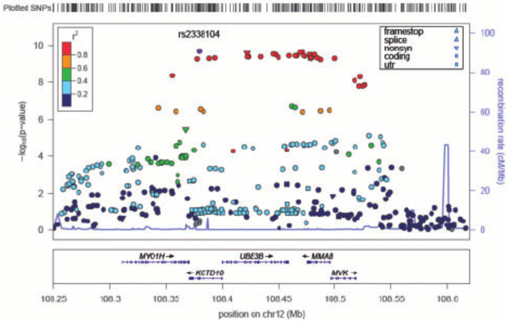
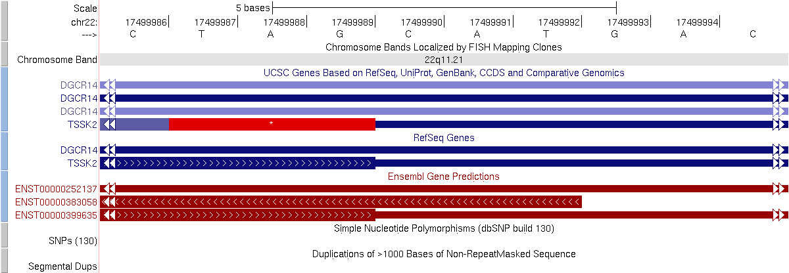
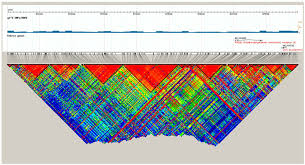
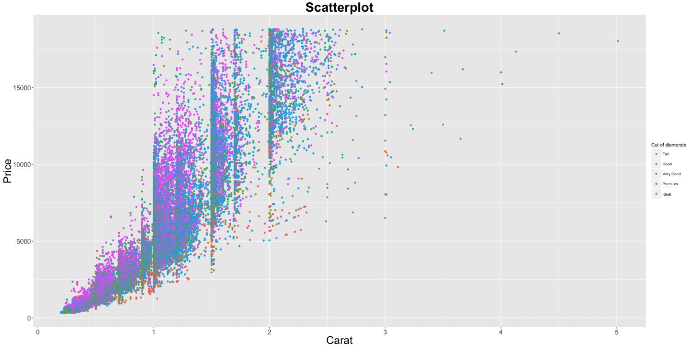
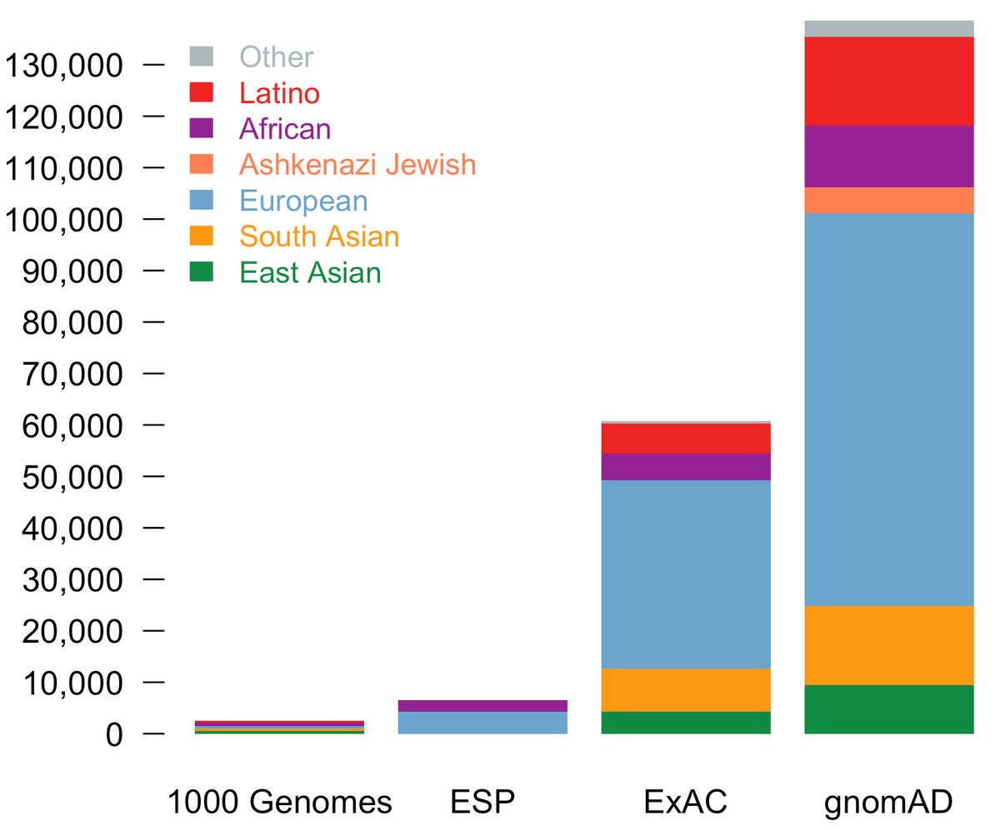
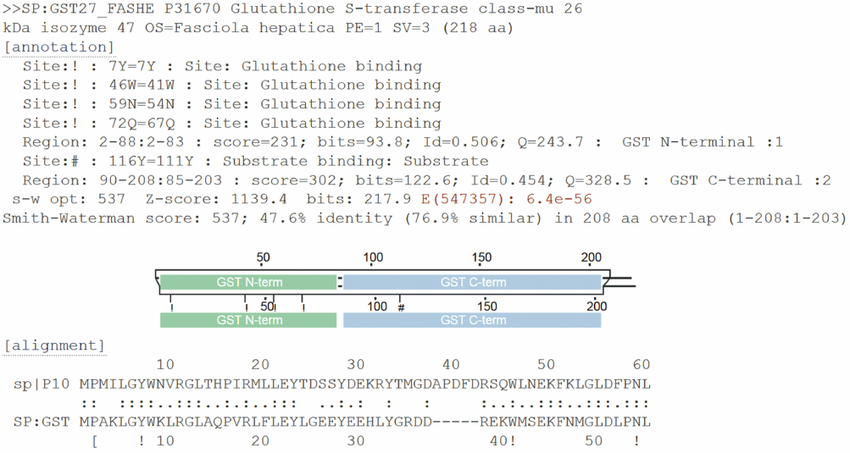
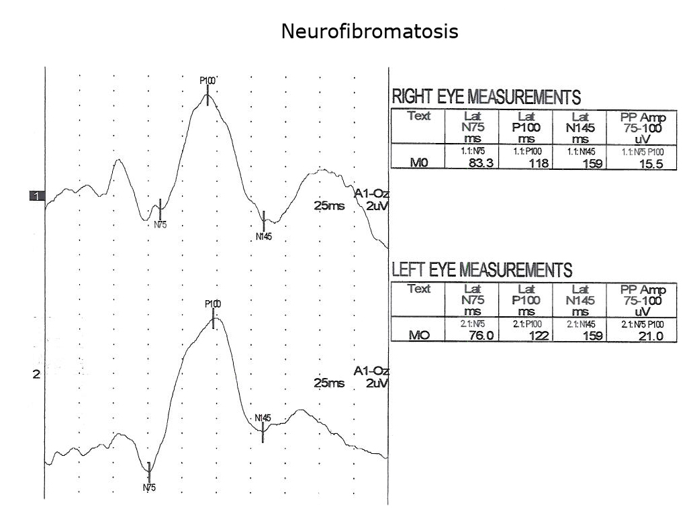
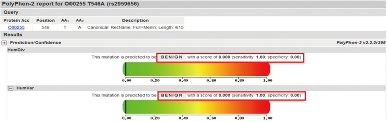
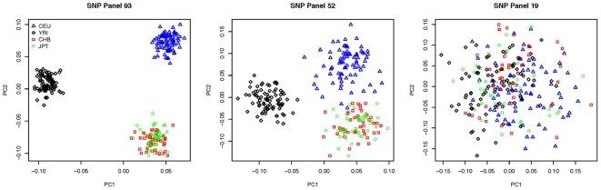

A. Target Identification
1. Mine Human Genetic Variation for Target Genes
Genetic analysis and mutation studies
Genome sequencing analysis
▼
1.
"List obesity-associated SNPs near the GLP1 and GLP1R loci from human genome sequencing data."

Mountain Range Plot of SNP Significance
Tools needed:
PLINK
LocusZoom
Microscope View of GLP1/GLP1R Region
Tools needed:
LocusZoom
UCSC Genome Browser

Excel-Style SNP Data Grid
Tools needed:
PLINK
ANNOVAR

Color-Coded SNP Relationship Grid
Tools needed:
Haploview
PLINK

Population Comparison Bar Charts
Tools needed:
PLINK
R (ggplot2)

2.
"Show rare coding variants in GLP1R found in obese vs non-obese populations."
Variant Frequency Comparison Plot
Tools needed:
gnomAD
R (ggplot2)

Protein Domain Mutation Map
Tools needed:
UniProt
Pfam

Variant Annotation Table
Tools needed:
ANNOVAR
VEP

Functional Impact Prediction
Tools needed:
SIFT
PolyPhen-2

Population Stratification Analysis
Tools needed:
PLINK
EIGENSTRAT

3.
"Identify exonic mutations affecting GLP1 signaling pathway genes from gnomAD or 1000 Genomes."
Pathway Gene Mutation Landscape
Tools needed:
gnomAD
KEGG Pathway
Exonic Variant Frequency Heatmap
Tools needed:
1000 Genomes
R (pheatmap)
Mutation Burden Comparison
Tools needed:
gnomAD
Mann-Whitney U Test
Protein Interaction Network with Mutations
Tools needed:
STRING
Cytoscape
Conservation Analysis of Mutated Residues
Tools needed:
PhyloP
GERP++
4.
"Extract disease associations from GLP1R-related patent literature."
Patent-Disease Association Network
Tools needed:
PatentScope
Cytoscape
Disease Frequency Timeline
Tools needed:
USPTO
R (ggplot2)
Therapeutic Indication Heatmap
Tools needed:
Google Patents
R (pheatmap)
Patent-Disease Classification Table
Tools needed:
PatentSight
Excel
Disease-Specific Mechanism Diagram
Tools needed:
Pathway Studio
BioRender
5.
"Identify disease-specific expression patterns of GLP1R from literature."
6.
"Map disease progression stages where GLP1R shows therapeutic potential."
7.
"Extract disease-specific biomarker associations with GLP1R activity."
8.
"Identify disease subtypes where GLP1R shows differential expression or function."
9.
"Map disease-specific therapeutic outcomes related to GLP1R modulation."
10.
"Extract disease-specific adverse events associated with GLP1R-targeted therapies."
Unmet needs analysis
▼
1.
"Identify gaps in current GLP1R-targeted therapies from clinical literature."
2.
"Extract limitations of existing GLP1R modulators from research papers."
3.
"Map therapeutic areas where GLP1R modulation shows promise but lacks approved drugs."
4.
"Identify patient populations underserved by current GLP1R-targeted treatments."
5.
"Extract safety and efficacy concerns with existing GLP1R therapies."
6.
"Map delivery and formulation challenges in GLP1R-targeted drug development."
7.
"Identify resistance mechanisms to current GLP1R-targeted therapies."
8.
"Extract compliance and adherence issues with existing GLP1R treatments."
9.
"Map cost-effectiveness gaps in current GLP1R-targeted therapies."
10.
"Identify opportunities for improved GLP1R-targeted drug delivery systems."
Disease concept mapping
▼
1.
"Map disease concepts and terminology associated with GLP1R in medical literature."
2.
"Identify disease hierarchies and relationships in GLP1R-related conditions."
3.
"Extract disease progression pathways involving GLP1R signaling."
4.
"Map comorbidity patterns in diseases associated with GLP1R dysfunction."
5.
"Identify disease-specific molecular pathways involving GLP1R."
6.
"Map disease-specific cellular contexts where GLP1R shows therapeutic relevance."
7.
"Extract disease-specific biomarkers and their relationship to GLP1R activity."
8.
"Map disease-specific therapeutic targets in GLP1R signaling pathways."
9.
"Identify disease-specific drug response patterns in GLP1R-targeted therapies."
10.
"Map disease-specific clinical outcomes related to GLP1R modulation."
Gene function mining
▼
1.
"Extract functional annotations of GLP1R from research literature."
2.
"Identify GLP1R's role in cellular processes from experimental studies."
3.
"Map GLP1R's molecular interactions from published data."
4.
"Extract regulatory mechanisms controlling GLP1R expression and activity."
5.
"Identify post-translational modifications of GLP1R from literature."
6.
"Map GLP1R's tissue-specific functions from experimental data."
7.
"Extract structural-functional relationships of GLP1R from studies."
8.
"Identify GLP1R's role in signal transduction pathways."
9.
"Map GLP1R's involvement in cellular responses and adaptations."
10.
"Extract GLP1R's role in metabolic homeostasis from literature."
Text categorization
▼
1.
"Categorize GLP1R-related literature by research methodology."
2.
"Classify GLP1R studies by experimental approach and techniques."
3.
"Organize GLP1R literature by disease context and therapeutic area."
4.
"Categorize GLP1R studies by molecular pathway and biological process."
5.
"Classify GLP1R literature by study type (basic, translational, clinical)."
6.
"Organize GLP1R studies by experimental model system used."
7.
"Categorize GLP1R literature by therapeutic intervention type."
8.
"Classify GLP1R studies by outcome measures and endpoints."
9.
"Organize GLP1R literature by publication type and impact."
10.
"Categorize GLP1R studies by data quality and evidence level."
Topic clustering
▼
1.
"Cluster GLP1R literature by research themes and topics."
2.
"Identify emerging research trends in GLP1R studies."
3.
"Group GLP1R publications by therapeutic applications."
4.
"Cluster GLP1R studies by molecular mechanisms investigated."
5.
"Identify research gaps and opportunities in GLP1R literature."
6.
"Group GLP1R publications by experimental approaches."
7.
"Cluster GLP1R studies by disease contexts and applications."
8.
"Identify collaborative research patterns in GLP1R studies."
9.
"Group GLP1R publications by technological innovations."
10.
"Cluster GLP1R studies by therapeutic development stage."
6. Investigate Biological Pathways and Networks for Target Identification
Pathway analysis and network biology
Pathway involvement analysis
▼
1.
"Identify pathways where GLP1R is involved from KEGG and Reactome databases."
2.
"Map GLP1R's role in metabolic signaling pathways."
3.
"Analyze GLP1R's involvement in appetite regulation pathways."
4.
"Identify GLP1R's role in glucose homeostasis pathways."
5.
"Map GLP1R's involvement in insulin secretion pathways."
6.
"Analyze GLP1R's role in gastrointestinal hormone signaling."
7.
"Identify GLP1R's involvement in cardiovascular function pathways."
8.
"Map GLP1R's role in neuroendocrine signaling pathways."
9.
"Analyze GLP1R's involvement in cellular energy metabolism pathways."
10.
"Identify GLP1R's role in disease-specific pathway dysregulation."
Key entity identification
▼
1.
"Identify key proteins that interact with GLP1R in signaling pathways."
2.
"Map transcription factors regulating GLP1R expression."
3.
"Identify downstream effectors of GLP1R signaling."
4.
"Map co-receptors and accessory proteins for GLP1R."
5.
"Identify regulatory proteins controlling GLP1R activity."
6.
"Map adaptor proteins linking GLP1R to intracellular pathways."
7.
"Identify kinases and phosphatases regulating GLP1R function."
8.
"Map ubiquitination and degradation regulators of GLP1R."
9.
"Identify chaperone proteins assisting GLP1R folding and trafficking."
10.
"Map disease-specific protein interactions with GLP1R."
Network vulnerability assessment
▼
1.
"Identify critical nodes in GLP1R signaling networks."
2.
"Map network bottlenecks in GLP1R pathways."
3.
"Identify compensatory mechanisms in GLP1R networks."
4.
"Map feedback loops in GLP1R signaling pathways."
5.
"Identify redundant pathways parallel to GLP1R signaling."
6.
"Map disease-specific vulnerabilities in GLP1R networks."
7.
"Identify drug resistance mechanisms in GLP1R pathways."
8.
"Map tissue-specific network adaptations in GLP1R signaling."
9.
"Identify age-related changes in GLP1R network robustness."
10.
"Map genetic variation effects on GLP1R network stability."
7. Conduct Gene Selection and Prioritization
Target ranking and filtering
Gene selection methods
▼
1.
"Apply statistical methods to identify differentially expressed genes in disease states."
2.
"Use machine learning algorithms to classify genes based on disease association."
3.
"Implement network-based approaches to identify hub genes in disease pathways."
4.
"Apply co-expression analysis to identify functionally related gene clusters."
5.
"Use evolutionary conservation metrics to identify essential genes."
6.
"Apply functional enrichment analysis to identify genes with relevant biological processes."
7.
"Use genetic association data to identify disease-linked genes."
8.
"Apply pathway analysis to identify genes in disease-relevant pathways."
9.
"Use protein-protein interaction data to identify functionally connected genes."
10.
"Apply multi-omics integration to identify genes with consistent signals across data types."
Target prioritization
▼
1.
"Rank genes based on disease association strength and consistency."
2.
"Prioritize genes with high expression in disease-relevant tissues."
3.
"Score genes based on druggability and structural accessibility."
4.
"Prioritize genes with validated functional roles in disease mechanisms."
5.
"Rank genes based on the availability of existing chemical probes and inhibitors."
6.
"Prioritize genes with clear phenotypic effects in genetic perturbation studies."
7.
"Score genes based on the potential for selective targeting without off-target effects."
8.
"Prioritize genes with biomarkers that can be used to monitor target engagement."
9.
"Rank genes based on the potential for therapeutic intervention at different disease stages."
10.
"Prioritize genes with the potential for combination therapy approaches."
Disease criteria organization
▼
1.
"Define disease-specific criteria for target selection based on pathophysiology."
2.
"Organize disease subtypes and their molecular characteristics for targeted therapy."
3.
"Establish disease progression stages and their molecular signatures."
4.
"Define disease-specific therapeutic windows for intervention."
5.
"Organize disease-specific biomarkers for patient stratification."
6.
"Establish disease-specific endpoints for therapeutic evaluation."
7.
"Define disease-specific resistance mechanisms to consider in target selection."
8.
"Organize disease-specific comorbidities and their impact on target selection."
9.
"Establish disease-specific safety considerations for target selection."
10.
"Define disease-specific regulatory requirements for target validation."
Ontology refinement
▼
1.
"Refine gene ontology terms to accurately represent target function in disease context."
2.
"Update pathway annotations to reflect disease-specific signaling networks."
3.
"Refine molecular function annotations based on experimental evidence."
4.
"Update cellular component annotations to reflect disease-specific localization."
5.
"Refine biological process annotations to include disease-specific functions."
6.
"Update protein domain annotations based on structural studies."
7.
"Refine interaction annotations to include disease-specific protein complexes."
8.
"Update regulatory annotations to reflect disease-specific expression control."
9.
"Refine phenotype annotations to include disease-specific effects."
10.
"Update therapeutic target annotations to reflect druggability and clinical relevance."
8. Assess Initial Target Druggability (In Silico)
Drug binding potential assessment
Druggability assessment
3D structure analysis
Binding site identification
9. Leverage High-Throughput Screening (HTS) for Target Discovery (Indirect)
Large-scale compound screening
Phenotypic screening (PDD)
Compound library analysis
10. Employ Functional Genetic Screens
Gene function disruption studies
Haploid cell genetics
RNAi screening
11. Utilize Chemical Genetic Screens
Chemical-genetic interaction mapping
Forward genetic screening
Small molecule integration
12. Analyze Gene and Protein Expression Correlation
Expression pattern analysis
Expression correlation analysis
Tissue specificity assessment
Accessibility filtering (GTEx)
13. Consider Subcellular Localization
Cellular compartment analysis
Location-disease correlation
Localization prediction
14. Integrate Computational Methodologies for Novel Target Identification
Multi-approach target prediction
In silico methodology review
Multi-method integration
Machine learning models (QSAR)
Ligand-based prediction